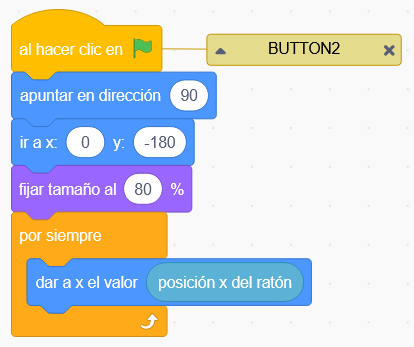
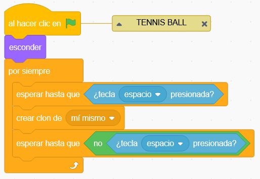

8. Breaking bricks¶

En esta práctica vamos a programar un juego que consiste en romper ladrillos con una pelota que rebota en una barra. Cada ladrillo roto nos dará un punto.
We start the Scratch editor.
Click language button
 upper menu bar and select English.
upper menu bar and select English.Delete the cat sprite by pressing on the icon of the trash can.

Añadimos un nuevo personaje, una barra de control.
Press the button choose an object
 .
.Search in the topic Todos.
and select the object Button2.

Realizamos el siguiente programa para la barra de control.
Press the green flag
 to test the operation of the program.
to test the operation of the program.La barra debe moverse horizontalmente en la parte baja de la pantalla siguiendo la posición del ratón.
Añadimos un nuevo personaje, un ladrillo.
Press the button choose an object
.Search in the topic Todos.
and select the object Button3.

Añadimos un nuevo personaje, una pelota de tenis.
Press the button choose an object
.Search in the topic Deportes.
and select the object Tennis ball.

Realizamos los siguientes programas para la pelota de tenis

Press the green flag
to test the operation of the program.Cada vez que pulsemos la barra espaciadora, debe aparecer una pelota de tenis que se mueve por la pantalla y rebota en las paredes y en la barra de control.
Cuando la pelota llega a la parte inferior de la pantalla, esta desaparece.
Ahora crearemos la variable puntos que va a almacenar los puntos que conseguimos rompiendo cada ladrillo.
Press the variables button
 ,
,click on create a variable
 .
.Change the name of the variable to puntos

Finally press the button Ok
A continuación crearemos la variable posicion que va a almacenar la posición de cada ladrillo a la hora de colocar los ladrillos en la pantalla.
Press the variables button
,click on create a variable
.Change the name of the variable to posicion
Por último crearemos el programa de los ladrillos.


Press the green flag
to test the operation of the program.Al iniciarse el programa, aparecerán todos los ladrillos en la parte superior de la pantalla. Ahora podemos jugar con la pelota al pulsar la barra espaciadora.
{kind=link}
{kind=link}
Ejercicios¶
Modifica el programa para que aparezcan dos filas de ladrillos en la parte superior.
Hay que duplicar el personaje de ladrillo, crear otra variable posicion2 y cambiarla en el nuevo ladrillo.
Por último hay que bajar la posición Y del nuevo ladrillo desde 130 hasta 80.
Modifica el programa para que el juego se acabe después de que se pierdan tres pelotas por la parte inferior.
Modifica el aspecto del los personajes para personalizarles a tu gusto.